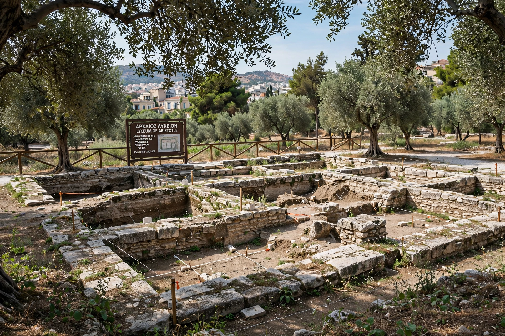

Lyceum
From Wikipedia, the free encyclopedia

The Lyceum (Ancient Greek: Λύκειον, Lykeion) was a gymnasium and sanctuary of Apollo Lyceus in classical Athens, best known as the school of Aristotle. Aristotle founded his school there in 335 BCE after leaving Plato's Academy, and taught there for twelve years until his departure from Athens in 323 BCE. Because Aristotle lectured while walking the covered walkway (the peripatos), his followers became known as the Peripatetics.
History and site
The Lyceum grounds, east of the city walls, had served as a military training ground and a place where Plato, Isocrates, and others also taught. Under Aristotle and his successor Theophrastus, the school accumulated a major library and collections used for research in biology, logic, rhetoric, and politics. The site's remains, in modern Athens near the Byzantine and Christian Museum, were identified in excavations beginning in 1996 and opened to the public in 2014.
Legacy
The word lyceum passed into many languages as a term for secondary schools (French lycée, German abitur-track echoes, Russian litsey) and, in 19th-century America, for a movement of public lecture associations.